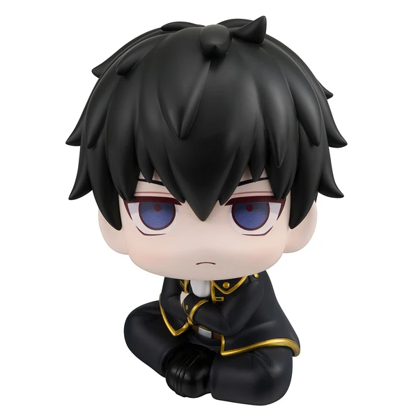

Series · 01
KAIJU NO. 8
Meet the characters from Kaiju No. 8 through the LookUp figure collection.

Gen Narumi
Kaiju No. 8 · LookUp Series

Soshiro Hoshina
Kaiju No. 8 · LookUp Series

Reno Ichikawa
Kaiju No. 8 · LookUp Series
Series · 02
BLUE LOCK
Discover your favorite players from Blue Lock in the adorable LookUp figure style.

Meguru Bachira
Blue Lock · LookUp Series

Seishiro Nagi
Blue Lock · LookUp Series

Reo Mikage
Blue Lock · LookUp Series
Series · 03
GINTAMA
Discover your favorite characters from Gintama in the adorable LookUp figure style.
Gintoki Sakata
Gintama · LookUp Series

Toshiro Hijikata
Gintama · LookUp Series
Kagura
Gintama · LookUp Series
Keep exploring
YOUR COLLECTION
STARTS HERE.
ค้นหาของชิ้นโปรด แล้วเตรียมเปิดพื้นที่ให้กับฟิกเกอร์ตัวถัดไปในคอลเลกชันของคุณ
BACK TO HOME ↗